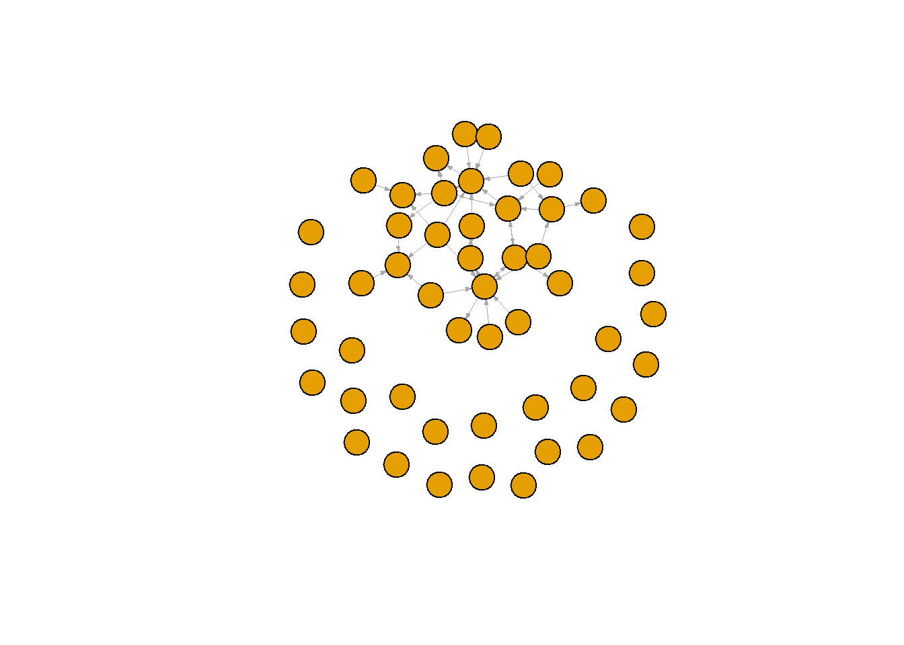

Assignments in class:
chapter 7 - Trying Rsiena
rm(list = ls())
fpackage.check <- function(packages) {
lapply(packages, FUN = function(x) {
if (!require(x, character.only = TRUE)) {
install.packages(x, dependencies = TRUE)
library(x, character.only = TRUE)
}
})
}
fsave <- function(x, file = NULL, location = "./data/processed/") {
ifelse(!dir.exists("data"), dir.create("data"), FALSE)
ifelse(!dir.exists("data/processed"), dir.create("data/processed"), FALSE)
if (is.null(file))
file = deparse(substitute(x))
datename <- substr(gsub("[:-]", "", Sys.time()), 1, 8)
totalname <- paste(location, file, "_", datename, ".rda", sep = "")
save(x, file = totalname) #need to fix if file is reloaded as input name, not as x.
}
fload <- function(filename) {
load(filename)
get(ls()[ls() != "filename"])
}
fshowdf <- function(x, ...) {
knitr::kable(x, digits = 2, "html", ...) %>%
kableExtra::kable_styling(bootstrap_options = c("striped", "hover")) %>%
kableExtra::scroll_box(width = "100%", height = "300px")
}
packages <- c("tidyverse", "scholar", "openalexR", "rvest", "jsonlite")
fpackage.check(packages)
## [[1]]
## NULL
##
## [[2]]
## NULL
##
## [[3]]
## NULL
##
## [[4]]
## NULL
##
## [[5]]
## NULL
#install.packages("Rsiena")
packages = c("RSiena", "tidyverse", "stringdist", "stringi")
fpackage.check(packages)
## [[1]]
## NULL
##
## [[2]]
## NULL
##
## [[3]]
## NULL
##
## [[4]]
## NULL
#load in data
scholars <- fload("./data/scholars_20240924.rda")
fcolnet <- function(data = scholars, university = "RU", discipline = "sociology", waves = list(c(2015,
2018), c(2019, 2023)), type = c("first")) {
# step 1
demographics <- do.call(rbind.data.frame, data$demographics)
demographics <- demographics %>%
mutate(Universiteit1.22 = replace(Universiteit1.22, is.na(Universiteit1.22), ""), Universiteit2.22 = replace(Universiteit2.22,
is.na(Universiteit2.22), ""), Universiteit1.24 = replace(Universiteit1.24, is.na(Universiteit1.24),
""), Universiteit2.24 = replace(Universiteit2.24, is.na(Universiteit2.24), ""), discipline.22 = replace(discipline.22,
is.na(discipline.22), ""), discipline.24 = replace(discipline.24, is.na(discipline.24), ""))
sample <- which((demographics$Universiteit1.22 %in% university | demographics$Universiteit2.22 %in%
university | demographics$Universiteit1.24 %in% university | demographics$Universiteit2.24 %in%
university) & (demographics$discipline.22 %in% discipline | demographics$discipline.24 %in% discipline))
demographics_soc <- demographics[sample, ]
scholars_sel <- lapply(scholars, "[", sample)
# step 2
ids <- demographics_soc$au_id
nwaves <- length(waves)
nets <- array(0, dim = c(nwaves, length(ids), length(ids)), dimnames = list(wave = 1:nwaves, ids,
ids))
dimnames(nets)
# step 3
df_works <- tibble(works_id = unlist(lapply(scholars_sel$work, function(l) l$id)), works_author = unlist(lapply(scholars_sel$work,
function(l) l$author), recursive = FALSE), works_year = unlist(lapply(scholars_sel$work, function(l) l$publication_year),
recursive = FALSE))
df_works <- df_works[!duplicated(df_works), ]
# step 4
if (type == "first") {
for (j in 1:nwaves) {
df_works_w <- df_works[df_works$works_year >= waves[[j]][1] & df_works$works_year <= waves[[j]][2],
]
for (i in 1:nrow(df_works_w)) {
ego <- df_works_w$works_author[i][[1]]$au_id[1]
alters <- df_works_w$works_author[i][[1]]$au_id[-1]
if (sum(ids %in% ego) > 0 & sum(ids %in% alters) > 0) {
nets[j, which(ids %in% ego), which(ids %in% alters)] <- 1
}
}
}
}
if (type == "last") {
for (j in 1:nwaves) {
df_works_w <- df_works[df_works$works_year >= waves[[j]][1] & df_works$works_year <= waves[[j]][2],
]
for (i in 1:nrow(df_works_w)) {
ego <- rev(df_works_w$works_author[i][[1]]$au_id)[1]
alters <- rev(df_works_w$works_author[i][[1]]$au_id)[-1]
if (sum(ids %in% ego) > 0 & sum(ids %in% alters) > 0) {
nets[j, which(ids %in% ego), which(ids %in% alters)] <- 1
}
}
}
}
if (type == "all") {
for (j in 1:nwaves) {
df_works_w <- df_works[df_works$works_year >= waves[[j]][1] & df_works$works_year <= waves[[j]][2],
]
for (i in 1:nrow(df_works_w)) {
egos <- df_works_w$works_author[i][[1]]$au_id
if (sum(ids %in% egos) > 0) {
nets[j, which(ids %in% egos), which(ids %in% egos)] <- 1
}
}
}
}
output <- list()
output$data <- scholars_sel
output$nets <- nets
return(output)
}
#save the output of your function
test <- fcolnet(data = scholars,
university = "RU",
discipline = "sociology",
waves = list(c(2015, 2018), c(2019, 2023)),
type = c("first"))
test_w1 <- igraph::graph_from_adjacency_matrix(
test$nets[1,,], #for this example I take the first wave of data. (thus I select the array of networks and take the first matrix)
mode = c("directed"),
weighted = NULL,
diag = FALSE,
add.colnames = NULL,
add.rownames = NULL
)
## Warning in igraph::graph_from_adjacency_matrix(test$nets[1, , ], mode = c("directed"), : Same
## attribute for columns and rows, row names are ignored
plot(test_w1,
vertex.label = NA,
edge.width = 0.2,
edge.arrow.size =0.2)

df_soc <- test$data
df_network <- test$nets
length(df_network)
## [1] 5000
dim(test$nets)#[1]
## [1] 2 50 50
wave1 <- test$nets[1,,]
wave2 <- test$nets[2,,]
# let us put the diagonal to zero
diag(wave1) <- 0
diag(wave2) <- 0
# we want a binary tie (not a weighted tie)
wave1[wave1 > 1] <- 1
wave2[wave2 > 1] <- 1
# put the nets in an array
net_soc_array <- array(data = c(wave1, wave2), dim = c(dim(wave1), 2))
# dependent
net <- sienaDependent(net_soc_array)
#now other way around, switched arrays
dim(net_soc_array)
## [1] 50 50 2
#in RSiena, we need to define dependent vars on ego level or network level
# also need to define independent vars, can be time constant and time varying
df <- test$data
df_demo <- do.call(rbind.data.frame, df$demographics)
#in environment, klik op df_demo om de data set te zien
#functie.24, independent variable
functie24 <- as.numeric(df_demo$Functie.24 == "Universitair docent")
functie24 <- coCovar(functie24)
mydata <- sienaDataCreate(net, functie24)
myeff <- getEffects(mydata)
#effectsDocumentation(myeff)
ifelse(!dir.exists("results"), dir.create("results"), FALSE)
## [1] FALSE
print01Report(mydata, modelname = "./results/soc_init")
#step 5
myAlgorithm <- sienaAlgorithmCreate(projname = "soc_init")
## If you use this algorithm object, siena07 will create/use an output file soc_init.txt .
ansM1 <- siena07(myAlgorithm, data = mydata, effects = myeff, returnDeps = TRUE)
# if necessary estimate again! ansM1 <- siena07(myAlgorithm, data = mydata, effects = myeff,
# prevAns = ansM1, returnDeps=TRUE)
ansM1
## Estimates, standard errors and convergence t-ratios
##
## Estimate Standard Convergence
## Error t-ratio
##
## Rate parameters:
## 0 Rate parameter 3.0189 ( 0.5159 )
##
## Other parameters:
## 1. eval outdegree (density) -1.8407 ( 0.1325 ) 0.0338
## 2. eval reciprocity 1.1659 ( 0.3970 ) -0.0042
##
## Overall maximum convergence ratio: 0.0391
##
##
## Total of 1623 iteration steps.
#convergence ratio should be below .25
step 1: define the data step 2: create the effects structure step 3:
get initial description, look at this file, report something on it
(mydata, myeff objects) object options, control variables: isolateNet,
inPop, outAct step 4: specify the model (back and forth between 2 &
4) step 5: estimate the model, chapter 12 for effects
#7.13
#myeff <- includeEffects(myeff, sameX, egoX, altX, interaction1 = "gender")
# in this example, sameX, egoX altX
IyBBc3NpZ25tZW50cyBpbiBjbGFzczogY2hhcHRlciA3IC0gVHJ5aW5nIFJzaWVuYQ0KYGBge3J9DQpybShsaXN0ID0gbHMoKSkNCg0KDQpmcGFja2FnZS5jaGVjayA8LSBmdW5jdGlvbihwYWNrYWdlcykgew0KICAgIGxhcHBseShwYWNrYWdlcywgRlVOID0gZnVuY3Rpb24oeCkgew0KICAgICAgICBpZiAoIXJlcXVpcmUoeCwgY2hhcmFjdGVyLm9ubHkgPSBUUlVFKSkgew0KICAgICAgICAgICAgaW5zdGFsbC5wYWNrYWdlcyh4LCBkZXBlbmRlbmNpZXMgPSBUUlVFKQ0KICAgICAgICAgICAgbGlicmFyeSh4LCBjaGFyYWN0ZXIub25seSA9IFRSVUUpDQogICAgICAgIH0NCiAgICB9KQ0KfQ0KDQpmc2F2ZSA8LSBmdW5jdGlvbih4LCBmaWxlID0gTlVMTCwgbG9jYXRpb24gPSAiLi9kYXRhL3Byb2Nlc3NlZC8iKSB7DQogICAgaWZlbHNlKCFkaXIuZXhpc3RzKCJkYXRhIiksIGRpci5jcmVhdGUoImRhdGEiKSwgRkFMU0UpDQogICAgaWZlbHNlKCFkaXIuZXhpc3RzKCJkYXRhL3Byb2Nlc3NlZCIpLCBkaXIuY3JlYXRlKCJkYXRhL3Byb2Nlc3NlZCIpLCBGQUxTRSkNCiAgICBpZiAoaXMubnVsbChmaWxlKSkNCiAgICAgICAgZmlsZSA9IGRlcGFyc2Uoc3Vic3RpdHV0ZSh4KSkNCiAgICBkYXRlbmFtZSA8LSBzdWJzdHIoZ3N1YigiWzotXSIsICIiLCBTeXMudGltZSgpKSwgMSwgOCkNCiAgICB0b3RhbG5hbWUgPC0gcGFzdGUobG9jYXRpb24sIGZpbGUsICJfIiwgZGF0ZW5hbWUsICIucmRhIiwgc2VwID0gIiIpDQogICAgc2F2ZSh4LCBmaWxlID0gdG90YWxuYW1lKSAgI25lZWQgdG8gZml4IGlmIGZpbGUgaXMgcmVsb2FkZWQgYXMgaW5wdXQgbmFtZSwgbm90IGFzIHguIA0KfQ0KDQpmbG9hZCA8LSBmdW5jdGlvbihmaWxlbmFtZSkgew0KICAgIGxvYWQoZmlsZW5hbWUpDQogICAgZ2V0KGxzKClbbHMoKSAhPSAiZmlsZW5hbWUiXSkNCn0NCg0KZnNob3dkZiA8LSBmdW5jdGlvbih4LCAuLi4pIHsNCiAgICBrbml0cjo6a2FibGUoeCwgZGlnaXRzID0gMiwgImh0bWwiLCAuLi4pICU+JQ0KICAgICAgICBrYWJsZUV4dHJhOjprYWJsZV9zdHlsaW5nKGJvb3RzdHJhcF9vcHRpb25zID0gYygic3RyaXBlZCIsICJob3ZlciIpKSAlPiUNCiAgICAgICAga2FibGVFeHRyYTo6c2Nyb2xsX2JveCh3aWR0aCA9ICIxMDAlIiwgaGVpZ2h0ID0gIjMwMHB4IikNCn0NCg0KcGFja2FnZXMgPC0gYygidGlkeXZlcnNlIiwgInNjaG9sYXIiLCAib3BlbmFsZXhSIiwgInJ2ZXN0IiwgImpzb25saXRlIikNCmZwYWNrYWdlLmNoZWNrKHBhY2thZ2VzKQ0KDQoNCg0KDQoNCiNpbnN0YWxsLnBhY2thZ2VzKCJSc2llbmEiKQ0KDQoNCnBhY2thZ2VzID0gYygiUlNpZW5hIiwgInRpZHl2ZXJzZSIsICJzdHJpbmdkaXN0IiwgInN0cmluZ2kiKQ0KDQpmcGFja2FnZS5jaGVjayhwYWNrYWdlcykNCg0KYGBgDQoNCmBgYHtyfQ0KI2xvYWQgaW4gZGF0YQ0Kc2Nob2xhcnMgPC0gZmxvYWQoIi4vZGF0YS9zY2hvbGFyc18yMDI0MDkyNC5yZGEiKQ0KYGBgDQoNCmBgYHtyfQ0KZmNvbG5ldCA8LSBmdW5jdGlvbihkYXRhID0gc2Nob2xhcnMsIHVuaXZlcnNpdHkgPSAiUlUiLCBkaXNjaXBsaW5lID0gInNvY2lvbG9neSIsIHdhdmVzID0gbGlzdChjKDIwMTUsDQogICAgMjAxOCksIGMoMjAxOSwgMjAyMykpLCB0eXBlID0gYygiZmlyc3QiKSkgew0KDQogICAgIyBzdGVwIDENCiAgICBkZW1vZ3JhcGhpY3MgPC0gZG8uY2FsbChyYmluZC5kYXRhLmZyYW1lLCBkYXRhJGRlbW9ncmFwaGljcykNCiAgICBkZW1vZ3JhcGhpY3MgPC0gZGVtb2dyYXBoaWNzICU+JQ0KICAgICAgICBtdXRhdGUoVW5pdmVyc2l0ZWl0MS4yMiA9IHJlcGxhY2UoVW5pdmVyc2l0ZWl0MS4yMiwgaXMubmEoVW5pdmVyc2l0ZWl0MS4yMiksICIiKSwgVW5pdmVyc2l0ZWl0Mi4yMiA9IHJlcGxhY2UoVW5pdmVyc2l0ZWl0Mi4yMiwNCiAgICAgICAgICAgIGlzLm5hKFVuaXZlcnNpdGVpdDIuMjIpLCAiIiksIFVuaXZlcnNpdGVpdDEuMjQgPSByZXBsYWNlKFVuaXZlcnNpdGVpdDEuMjQsIGlzLm5hKFVuaXZlcnNpdGVpdDEuMjQpLA0KICAgICAgICAgICAgIiIpLCBVbml2ZXJzaXRlaXQyLjI0ID0gcmVwbGFjZShVbml2ZXJzaXRlaXQyLjI0LCBpcy5uYShVbml2ZXJzaXRlaXQyLjI0KSwgIiIpLCBkaXNjaXBsaW5lLjIyID0gcmVwbGFjZShkaXNjaXBsaW5lLjIyLA0KICAgICAgICAgICAgaXMubmEoZGlzY2lwbGluZS4yMiksICIiKSwgZGlzY2lwbGluZS4yNCA9IHJlcGxhY2UoZGlzY2lwbGluZS4yNCwgaXMubmEoZGlzY2lwbGluZS4yNCksICIiKSkNCg0KICAgIHNhbXBsZSA8LSB3aGljaCgoZGVtb2dyYXBoaWNzJFVuaXZlcnNpdGVpdDEuMjIgJWluJSB1bml2ZXJzaXR5IHwgZGVtb2dyYXBoaWNzJFVuaXZlcnNpdGVpdDIuMjIgJWluJQ0KICAgICAgICB1bml2ZXJzaXR5IHwgZGVtb2dyYXBoaWNzJFVuaXZlcnNpdGVpdDEuMjQgJWluJSB1bml2ZXJzaXR5IHwgZGVtb2dyYXBoaWNzJFVuaXZlcnNpdGVpdDIuMjQgJWluJQ0KICAgICAgICB1bml2ZXJzaXR5KSAmIChkZW1vZ3JhcGhpY3MkZGlzY2lwbGluZS4yMiAlaW4lIGRpc2NpcGxpbmUgfCBkZW1vZ3JhcGhpY3MkZGlzY2lwbGluZS4yNCAlaW4lIGRpc2NpcGxpbmUpKQ0KDQogICAgZGVtb2dyYXBoaWNzX3NvYyA8LSBkZW1vZ3JhcGhpY3Nbc2FtcGxlLCBdDQogICAgc2Nob2xhcnNfc2VsIDwtIGxhcHBseShzY2hvbGFycywgIlsiLCBzYW1wbGUpDQoNCiAgICAjIHN0ZXAgMg0KICAgIGlkcyA8LSBkZW1vZ3JhcGhpY3Nfc29jJGF1X2lkDQogICAgbndhdmVzIDwtIGxlbmd0aCh3YXZlcykNCiAgICBuZXRzIDwtIGFycmF5KDAsIGRpbSA9IGMobndhdmVzLCBsZW5ndGgoaWRzKSwgbGVuZ3RoKGlkcykpLCBkaW1uYW1lcyA9IGxpc3Qod2F2ZSA9IDE6bndhdmVzLCBpZHMsDQogICAgICAgIGlkcykpDQogICAgZGltbmFtZXMobmV0cykNCg0KICAgICMgc3RlcCAzDQogICAgZGZfd29ya3MgPC0gdGliYmxlKHdvcmtzX2lkID0gdW5saXN0KGxhcHBseShzY2hvbGFyc19zZWwkd29yaywgZnVuY3Rpb24obCkgbCRpZCkpLCB3b3Jrc19hdXRob3IgPSB1bmxpc3QobGFwcGx5KHNjaG9sYXJzX3NlbCR3b3JrLA0KICAgICAgICBmdW5jdGlvbihsKSBsJGF1dGhvciksIHJlY3Vyc2l2ZSA9IEZBTFNFKSwgd29ya3NfeWVhciA9IHVubGlzdChsYXBwbHkoc2Nob2xhcnNfc2VsJHdvcmssIGZ1bmN0aW9uKGwpIGwkcHVibGljYXRpb25feWVhciksDQogICAgICAgIHJlY3Vyc2l2ZSA9IEZBTFNFKSkNCg0KICAgIGRmX3dvcmtzIDwtIGRmX3dvcmtzWyFkdXBsaWNhdGVkKGRmX3dvcmtzKSwgXQ0KDQogICAgIyBzdGVwIDQNCiAgICBpZiAodHlwZSA9PSAiZmlyc3QiKSB7DQogICAgICAgIGZvciAoaiBpbiAxOm53YXZlcykgew0KICAgICAgICAgICAgZGZfd29ya3NfdyA8LSBkZl93b3Jrc1tkZl93b3JrcyR3b3Jrc195ZWFyID49IHdhdmVzW1tqXV1bMV0gJiBkZl93b3JrcyR3b3Jrc195ZWFyIDw9IHdhdmVzW1tqXV1bMl0sDQogICAgICAgICAgICAgICAgXQ0KICAgICAgICAgICAgZm9yIChpIGluIDE6bnJvdyhkZl93b3Jrc193KSkgew0KICAgICAgICAgICAgICAgIGVnbyA8LSBkZl93b3Jrc193JHdvcmtzX2F1dGhvcltpXVtbMV1dJGF1X2lkWzFdDQogICAgICAgICAgICAgICAgYWx0ZXJzIDwtIGRmX3dvcmtzX3ckd29ya3NfYXV0aG9yW2ldW1sxXV0kYXVfaWRbLTFdDQogICAgICAgICAgICAgICAgaWYgKHN1bShpZHMgJWluJSBlZ28pID4gMCAmIHN1bShpZHMgJWluJSBhbHRlcnMpID4gMCkgew0KICAgICAgICAgICAgICAgICAgbmV0c1tqLCB3aGljaChpZHMgJWluJSBlZ28pLCB3aGljaChpZHMgJWluJSBhbHRlcnMpXSA8LSAxDQogICAgICAgICAgICAgICAgfQ0KICAgICAgICAgICAgfQ0KICAgICAgICB9DQogICAgfQ0KDQogICAgaWYgKHR5cGUgPT0gImxhc3QiKSB7DQogICAgICAgIGZvciAoaiBpbiAxOm53YXZlcykgew0KICAgICAgICAgICAgZGZfd29ya3NfdyA8LSBkZl93b3Jrc1tkZl93b3JrcyR3b3Jrc195ZWFyID49IHdhdmVzW1tqXV1bMV0gJiBkZl93b3JrcyR3b3Jrc195ZWFyIDw9IHdhdmVzW1tqXV1bMl0sDQogICAgICAgICAgICAgICAgXQ0KICAgICAgICAgICAgZm9yIChpIGluIDE6bnJvdyhkZl93b3Jrc193KSkgew0KICAgICAgICAgICAgICAgIGVnbyA8LSByZXYoZGZfd29ya3NfdyR3b3Jrc19hdXRob3JbaV1bWzFdXSRhdV9pZClbMV0NCiAgICAgICAgICAgICAgICBhbHRlcnMgPC0gcmV2KGRmX3dvcmtzX3ckd29ya3NfYXV0aG9yW2ldW1sxXV0kYXVfaWQpWy0xXQ0KICAgICAgICAgICAgICAgIGlmIChzdW0oaWRzICVpbiUgZWdvKSA+IDAgJiBzdW0oaWRzICVpbiUgYWx0ZXJzKSA+IDApIHsNCiAgICAgICAgICAgICAgICAgIG5ldHNbaiwgd2hpY2goaWRzICVpbiUgZWdvKSwgd2hpY2goaWRzICVpbiUgYWx0ZXJzKV0gPC0gMQ0KICAgICAgICAgICAgICAgIH0NCiAgICAgICAgICAgIH0NCiAgICAgICAgfQ0KICAgIH0NCg0KICAgIGlmICh0eXBlID09ICJhbGwiKSB7DQogICAgICAgIGZvciAoaiBpbiAxOm53YXZlcykgew0KICAgICAgICAgICAgZGZfd29ya3NfdyA8LSBkZl93b3Jrc1tkZl93b3JrcyR3b3Jrc195ZWFyID49IHdhdmVzW1tqXV1bMV0gJiBkZl93b3JrcyR3b3Jrc195ZWFyIDw9IHdhdmVzW1tqXV1bMl0sDQogICAgICAgICAgICAgICAgXQ0KICAgICAgICAgICAgZm9yIChpIGluIDE6bnJvdyhkZl93b3Jrc193KSkgew0KICAgICAgICAgICAgICAgIGVnb3MgPC0gZGZfd29ya3NfdyR3b3Jrc19hdXRob3JbaV1bWzFdXSRhdV9pZA0KICAgICAgICAgICAgICAgIGlmIChzdW0oaWRzICVpbiUgZWdvcykgPiAwKSB7DQogICAgICAgICAgICAgICAgICBuZXRzW2osIHdoaWNoKGlkcyAlaW4lIGVnb3MpLCB3aGljaChpZHMgJWluJSBlZ29zKV0gPC0gMQ0KICAgICAgICAgICAgICAgIH0NCiAgICAgICAgICAgIH0NCiAgICAgICAgfQ0KICAgIH0NCiAgICBvdXRwdXQgPC0gbGlzdCgpDQogICAgb3V0cHV0JGRhdGEgPC0gc2Nob2xhcnNfc2VsDQogICAgb3V0cHV0JG5ldHMgPC0gbmV0cw0KICAgIHJldHVybihvdXRwdXQpDQp9DQpgYGANCg0KYGBge3J9DQojc2F2ZSB0aGUgb3V0cHV0IG9mIHlvdXIgZnVuY3Rpb24NCnRlc3QgPC0gZmNvbG5ldChkYXRhID0gc2Nob2xhcnMsIA0KICAgICAgICAgICAgICAgIHVuaXZlcnNpdHkgPSAiUlUiLCANCiAgICAgICAgICAgICAgICBkaXNjaXBsaW5lID0gInNvY2lvbG9neSIsIA0KICAgICAgICAgICAgICAgIHdhdmVzID0gbGlzdChjKDIwMTUsIDIwMTgpLCBjKDIwMTksIDIwMjMpKSwgDQogICAgICAgICAgICAgICAgdHlwZSA9IGMoImZpcnN0IikpDQoNCg0KDQoNCnRlc3RfdzEgPC0gaWdyYXBoOjpncmFwaF9mcm9tX2FkamFjZW5jeV9tYXRyaXgoDQogIHRlc3QkbmV0c1sxLCxdLCAjZm9yIHRoaXMgZXhhbXBsZSBJIHRha2UgdGhlIGZpcnN0IHdhdmUgb2YgZGF0YS4gKHRodXMgSSBzZWxlY3QgdGhlIGFycmF5IG9mIG5ldHdvcmtzIGFuZCB0YWtlIHRoZSBmaXJzdCBtYXRyaXgpDQogIG1vZGUgPSBjKCJkaXJlY3RlZCIpLA0KICB3ZWlnaHRlZCA9IE5VTEwsDQogIGRpYWcgPSBGQUxTRSwNCiAgYWRkLmNvbG5hbWVzID0gTlVMTCwNCiAgYWRkLnJvd25hbWVzID0gTlVMTA0KKQ0KDQpwbG90KHRlc3RfdzEsDQogIHZlcnRleC5sYWJlbCA9IE5BLA0KICBlZGdlLndpZHRoID0gMC4yLA0KICBlZGdlLmFycm93LnNpemUgPTAuMikNCmBgYA0KYGBge3J9DQoNCmRmX3NvYyA8LSB0ZXN0JGRhdGENCmRmX25ldHdvcmsgPC0gdGVzdCRuZXRzDQoNCmxlbmd0aChkZl9uZXR3b3JrKQ0KZGltKHRlc3QkbmV0cykjWzFdDQpgYGANCmBgYHtyfQ0Kd2F2ZTEgPC0gdGVzdCRuZXRzWzEsLF0NCndhdmUyIDwtIHRlc3QkbmV0c1syLCxdDQoNCiMgbGV0IHVzIHB1dCB0aGUgZGlhZ29uYWwgdG8gemVybw0KZGlhZyh3YXZlMSkgPC0gMA0KZGlhZyh3YXZlMikgPC0gMA0KDQojIHdlIHdhbnQgYSBiaW5hcnkgdGllIChub3QgYSB3ZWlnaHRlZCB0aWUpDQp3YXZlMVt3YXZlMSA+IDFdIDwtIDENCndhdmUyW3dhdmUyID4gMV0gPC0gMQ0KDQojIHB1dCB0aGUgbmV0cyBpbiBhbiBhcnJheQ0KbmV0X3NvY19hcnJheSA8LSBhcnJheShkYXRhID0gYyh3YXZlMSwgd2F2ZTIpLCBkaW0gPSBjKGRpbSh3YXZlMSksIDIpKQ0KDQojIGRlcGVuZGVudA0KbmV0IDwtIHNpZW5hRGVwZW5kZW50KG5ldF9zb2NfYXJyYXkpDQoNCiNub3cgb3RoZXIgd2F5IGFyb3VuZCwgc3dpdGNoZWQgYXJyYXlzDQpkaW0obmV0X3NvY19hcnJheSkNCmBgYA0KDQpgYGB7cn0NCiNpbiBSU2llbmEsIHdlIG5lZWQgdG8gZGVmaW5lIGRlcGVuZGVudCB2YXJzIG9uIGVnbyBsZXZlbCBvciBuZXR3b3JrIGxldmVsDQojIGFsc28gbmVlZCB0byBkZWZpbmUgaW5kZXBlbmRlbnQgdmFycywgY2FuIGJlIHRpbWUgY29uc3RhbnQgYW5kIHRpbWUgdmFyeWluZw0KDQpkZiA8LSB0ZXN0JGRhdGENCmRmX2RlbW8gPC0gZG8uY2FsbChyYmluZC5kYXRhLmZyYW1lLCBkZiRkZW1vZ3JhcGhpY3MpDQoNCiNpbiBlbnZpcm9ubWVudCwga2xpayBvcCBkZl9kZW1vIG9tIGRlIGRhdGEgc2V0IHRlIHppZW4NCiNmdW5jdGllLjI0LCBpbmRlcGVuZGVudCB2YXJpYWJsZQ0KZnVuY3RpZTI0IDwtIGFzLm51bWVyaWMoZGZfZGVtbyRGdW5jdGllLjI0ID09ICJVbml2ZXJzaXRhaXIgZG9jZW50IikNCmZ1bmN0aWUyNCA8LSBjb0NvdmFyKGZ1bmN0aWUyNCkNCg0KDQpteWRhdGEgPC0gc2llbmFEYXRhQ3JlYXRlKG5ldCwgZnVuY3RpZTI0KQ0KDQpteWVmZiA8LSBnZXRFZmZlY3RzKG15ZGF0YSkNCg0KI2VmZmVjdHNEb2N1bWVudGF0aW9uKG15ZWZmKQ0KDQpgYGANCmBgYHtyfQ0KaWZlbHNlKCFkaXIuZXhpc3RzKCJyZXN1bHRzIiksIGRpci5jcmVhdGUoInJlc3VsdHMiKSwgRkFMU0UpDQoNCnByaW50MDFSZXBvcnQobXlkYXRhLCBtb2RlbG5hbWUgPSAiLi9yZXN1bHRzL3NvY19pbml0IikNCg0KDQpgYGANCmBgYHtyfQ0KI3N0ZXAgNQ0KbXlBbGdvcml0aG0gPC0gc2llbmFBbGdvcml0aG1DcmVhdGUocHJvam5hbWUgPSAic29jX2luaXQiKQ0KYW5zTTEgPC0gc2llbmEwNyhteUFsZ29yaXRobSwgZGF0YSA9IG15ZGF0YSwgZWZmZWN0cyA9IG15ZWZmLCByZXR1cm5EZXBzID0gVFJVRSkNCiMgaWYgbmVjZXNzYXJ5IGVzdGltYXRlIGFnYWluISAgYW5zTTEgPC0gc2llbmEwNyhteUFsZ29yaXRobSwgZGF0YSA9IG15ZGF0YSwgZWZmZWN0cyA9IG15ZWZmLA0KIyBwcmV2QW5zID0gYW5zTTEsIHJldHVybkRlcHM9VFJVRSkNCmFuc00xDQoNCiNjb252ZXJnZW5jZSByYXRpbyBzaG91bGQgYmUgYmVsb3cgLjI1DQpgYGANCg0Kc3RlcCAxOiBkZWZpbmUgdGhlIGRhdGENCnN0ZXAgMjogY3JlYXRlIHRoZSBlZmZlY3RzIHN0cnVjdHVyZQ0Kc3RlcCAzOiBnZXQgaW5pdGlhbCBkZXNjcmlwdGlvbiwgbG9vayBhdCB0aGlzIGZpbGUsIHJlcG9ydCBzb21ldGhpbmcgb24gaXQgKG15ZGF0YSwgbXllZmYgb2JqZWN0cykNCiAgb2JqZWN0IG9wdGlvbnMsIGNvbnRyb2wgdmFyaWFibGVzOiBpc29sYXRlTmV0LCBpblBvcCwgb3V0QWN0DQpzdGVwIDQ6IHNwZWNpZnkgdGhlIG1vZGVsIChiYWNrIGFuZCBmb3J0aCBiZXR3ZWVuIDIgJiA0KSANCnN0ZXAgNTogZXN0aW1hdGUgdGhlIG1vZGVsLCBjaGFwdGVyIDEyIGZvciBlZmZlY3RzDQpgYGB7cn0NCiM3LjEzDQojbXllZmYgPC0gaW5jbHVkZUVmZmVjdHMobXllZmYsIHNhbWVYLCBlZ29YLCBhbHRYLCBpbnRlcmFjdGlvbjEgPSAiZ2VuZGVyIikNCiMgaW4gdGhpcyBleGFtcGxlLCBzYW1lWCwgZWdvWCBhbHRYIA0KDQpgYGANCg0KDQoNCg0K